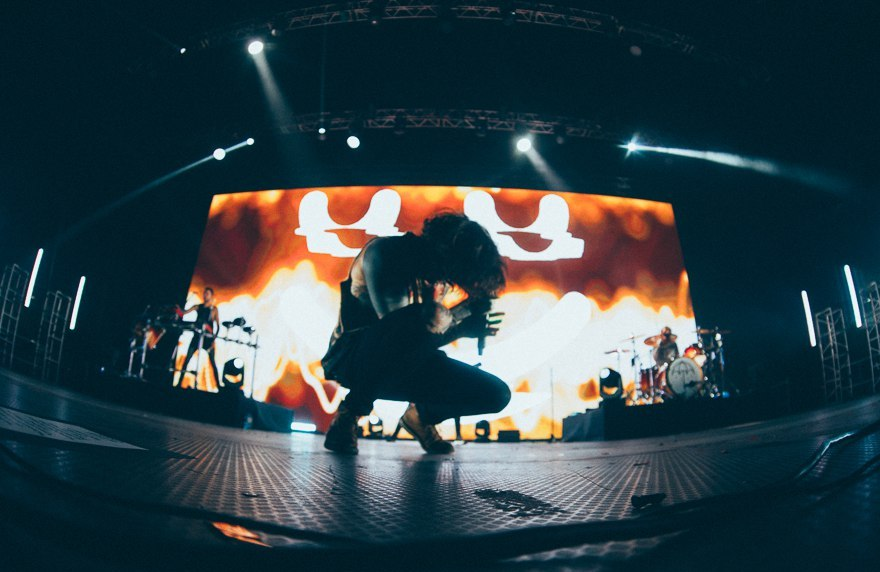

ABOUT
Bring Me the Horizon, often known by the acronym BMTH, are an English rock band from Sheffield, South Yorkshire. Formed in 2004, the group now consists of vocalist Oliver Sykes, guitarist Lee Malia, bassist Matt Kean, drummer Matt Nicholls and keyboardist Jordan Fish. They are signed to RCA Records globally and Columbia Records exclusively in the United States. The style of their early work, including their debut album Count Your Blessings, has been described primarily as deathcore, but they started to adopt a more eclectic style of metalcore on later albums. Furthermore, their fifth album That's the Spirit marked a shift in their sound to less aggressive rock music styles. The band released their debut album Count Your Blessings in 2006. Upon release, the album's sound polarised listeners, and was met with critical disdain. The band began to break away from their controversial sound with Suicide Season (2008), which was a creative, critical and commercial turning point for the band. Bring Me the Horizon released their third album, There Is a Hell, Believe Me I've Seen It. There Is a Heaven, Let's Keep It a Secret., in 2010, propelling them to greater international fame, whilst incorporating influences from classical, electronica and pop. Their major label debut, Sempiternal (2013) achieved Gold certification in Australia (35,000) and Silver in the United Kingdom (60,000). That's the Spirit (2015) debuted at number two in the UK Albums Chart and the US Billboard 200. As well as these five studio albums, they have also released two extended plays and two live albums. They have received four Kerrang! Awards, including two for Best British Band and one for Best Live Band. They have also received a Grammy nomination.
The band released their debut album Count Your Blessings in October 2006 in the United Kingdom and in August 2007 in the United States. They rented a house in the country to write songs, but easily became distracted. They then recorded the album in inner-city Birmingham, a process which was infamous for their excessive and dangerous drinking. During this period drummer Nicholls summarised it saying "we were out every night, just being regular 18-year-olds". Critics panned the album adding to the strongly polarised responses the band were already seeing from the public. They supported Count Your Blessings by going on a lengthy headline tour of the UK in November, and immediately followed this joining Lostprophets and The Blackout on a UK tour through late November and December 2006. In January 2007, Bring Me the Horizon were able to set their sights beyond the UK, when they replaced Bury Your Dead on Killswitch Engage's European headline tour. The slot became available after Bury Your Dead were forced to withdraw by the departure from the band of their vocalist, Mat Bruso. Bring Me the Horizon's presence on the tour was poorly received by fans of Killswitch Engage, with concert attendees regularly throwing bottles at the band before they even started playing their set.